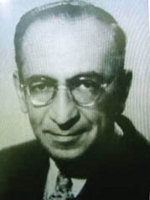

(1899 – 1961)

Türk edebiyatında karakterlerin psikolojik tahlillerine kapsamlı haliyle ilk kez yer veren yazarlardan biri Peyami Safa'dır. Onun bir romanını okuyup bitirdikten sonra adeta tanıdığınız bir arkadaştan, hatta bir akrabadan ayrılmış gibi hissedersiniz kendinizi. Yazdıkları konusunda son derece hassas olan Peyami Safa, "edebî değer" taşımadığını düşündüğü kitaplarını "Server Bedi" takma adıyla yazar ve onlardan söz edilmesinden pek hoşlanmazdı.
1899 İstanbul doğumlu olan ve Türk edebiyatında "psikolojik roman" türünün en yetkin temsilcilerinden biri sayılan Peyami Safa, Servet-i Fünun dönemi şairlerinden İsmail Safa'nın oğludur. Sivas'a sürgüne gönderilen babasının orada ölmesi üzerine 1901 yılında iki yaşındayken yetim kalmış, bu yüzden "Yetim-i Safa" (Safa'nın Yetimi) adıyla anılmıştır. Babasız büyümenin acılarının yanı sıra sekiz dokuz yaşlarında yakalandığı bir kemik hastalığı dolayısıyla 17 yaşına kadar bu hastalığın fiziksel ve ruhsal bunalımlarını yaşamıştır. Doktorlar kolunun kesilmesinde karar kılmış, fakat Safa bunu kabul etmemiştir. Daha sonraları bu günlerdeki tecrübelerini "Dokuzuncu Hariciye Koğuşu" adlı romanında okurlarıyla paylaşır. Hastalık ve savaşın yol açtığı maddi sıkıntılar dolayısıyla öğrenimini sürdürememiş, on üç yaşında hayatını kazanmak ve annesine bakmak için Vefa Lisesi'ndeki öğrenimini yarıda bırakmıştır. Karton Matbaası'nda bir süre çalışan Peyami Safa, Posta - Telgraf Nezareti'ne girmiş, I. Dünya Savaşı'nın başlamasına kadar orada çalışmıştır (1914). Daha sonra Boğaziçi'ndeki Rehber-i İttihat Mektebi'nde öğretmenlik yapmaya başlamıştır. Dört yıl çalıştığı bu okulda hem öğretmiş hem de kendi çabasıyla Fransızcasını ilerletmiştir. Buradaki izlenim ve deneyimlerini Biz İnsanlar adlı eserinde aktarmıştır. 1918 yılında ağabeyi İlhami Safa'nın isteği üzerine öğretmenlikten ayrılmış ve birlikte çıkardıkları 20. Asır adlı akşam gazetesinde Asrın Hikayeleri başlığı altında yazdığı öykülerle gazetecilik yaşamına başlamıştır. İmzasız olarak yazdığı bu hikayelerin tutulması üzerine Server Bedi takma adını kullanmaya başlayan Peyami Safa, daha sonra 1921'de Son Telgraf gazetesinde yazmış, oradan da Tasvir-i Efkâr'a geçmiştir. Daha sonra Cumhuriyet gazetesine geçmiş, 1940 yılına kadar bu gazetede fıkra ve makalelerinin yanı sıra roman da tefrika etmiştir.
Peyami Safa, eklem hastası genç bir delikanlının psikolojisini anlattığı otobiyografik romanı Dokuzuncu Hariciye Koğuşu (1931) ile büyük bir başarı kazanmıştır. Bu roman hariç, 1922-1939 yılları arasında yazdığı Mahşer (1924), Şimşek (1928), Fatih-Harbiye (1931) ve Biz İnsanlar (1939) adlı romanlarında Doğu-Batı çatışmasını karakterlerde somutlaştırarak işlemiştir. Safa bu romanlarında; ruh hallerini çözümlemede, kurguda, dilinin kıvraklığında ve anlatım tekniklerindeki denemelerde başarılı bulunurken romanlarında düşünceyi fazla öne çıkarması nedeniyle eleştiriler almıştır. Romanlarında olaydan çok karakter tahliline önem veren Safa, toplumdaki ahlak çöküntüsünü, medeniyet değişiminin yol açtığı bocalamayı, nesiller ve sosyal çevreler arasındaki çatışmayı da eserlerinde dile getirdi. Zıt kavramları, duygu ve düşünce tezatını ustaca işledi. II. Dünya Savaşı sırasında Nasyonal Sosyalistlere yakınlaşmasıyla dikkat çeken Safa'nın gerçekçi roman çizgisi Matmazel Noraliya'nın Koltuğu (1949) ile mistisizme yöneldi.
İlk uzun hikayesi Gençliğimiz'i 1922 yılında yayımlayan Peyami Safa para kazanmak amacıyla yazdığı kitaplarında, ilk defa ağabeyi İlhami Safa'nın takma ad olarak kullandığı, annesi Server Bedia Hanım'ın adından uyarladığı Server Bedi takma adını kullanmış; bu adla yüzlerce eser vermiştir. Bunlar arasında en sevilenler Cingöz Recai macera romanları serisi ile Cumbadan Rumbaya adlı romanı olmuştur.
Peyami Safa, yayımlandığı yıllarda hayli etkili olmuş Hafta, Kültür Haftası (1936, 21 sayı) ve Türk Düşüncesi (1953-1960, 63 sayı) dergilerini çıkarmıştır.
Asıl ününü romancı olarak yapan Peyami Safa, bazı uzun öyküleri ile de dikkati çekmiş ve Batılı kaynakların bir "zalim" olarak tanıttıkları Hun hükümdarı Attila'yı aklamak amacıyla aynı adda bir de tarihsel roman yazmıştır.
1960'lı yıllara kadar başta Milliyet olmak üzere birçok gazete ve dergide yazan Peyami Safa 27 Mayıs'tan sonra Son Havadis gazetesinde yazmaya başlamıştır (1961). Aynı yıl Erzurum'da yedek subaylığını yapmakta olan oğlu Merve'nin ölümü üzerine büyük bir sarsıntı geçiren Peyami Safa, 15 Haziran 1961 tarihinde İstanbul'da vefat etmiştir.
Romanları: Gençliğimiz (1922), Şimşek (1923), Sözde Kızlar (1923), Mahşer (1924), Bir Akşamdı (1924), Süngülerin Gölgesinde (1924), Bir Genç Kız Kalbinin Cürmü (1925), Canan (1925), Dokuzuncu Hariciye Koğuşu (1930), Fatih-Harbiye (1931), Attila (1931), Bir Tereddüdün Romanı (1933), Matmazel Noraliya'nın Koltuğu (1949), Yalnızız (1951), Biz İnsanlar (1959)